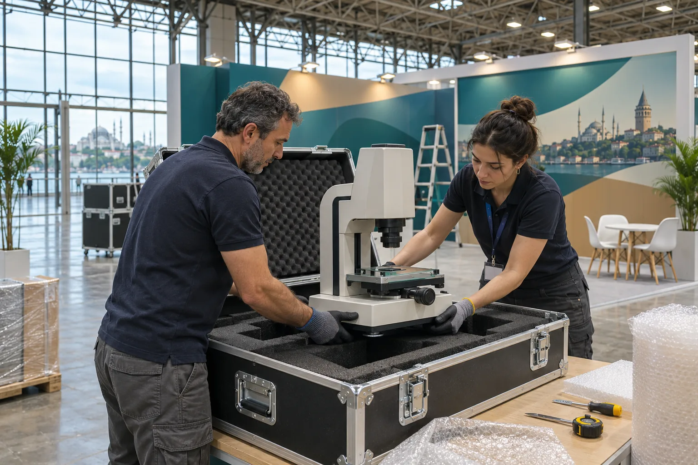

A German instrument maker plans to demonstrate a coordinate measuring machine at an Istanbul trade fair, then send it to a distributor's event in Dubai. Its production manager has a packing list and a digital carnet application. The person who will actually carry the machine across the border has neither. Before the instrument leaves the factory, the team needs a plan for each customs movement, including how it will prove that the same machine left again.
The International Chamber of Commerce lists 9 November 2026 as the United Arab Emirates' activation date for digital ATA carnets. The European Union, Switzerland, Norway and the United Kingdom activated on 1 June. A company adding Dubai to a Turkish exhibition tour therefore needs to reconsider its document pack. The change concerns how participating customs administrations process a carnet. It does not expand the goods eligible for temporary admission, authorise local sales or turn an entire international itinerary into a paperless journey.
Decide which goods you expect to bring home
An ATA carnet is a customs document backed by an international guarantee arrangement. For eligible temporary movements it helps the holder obtain admission without making a separate duty deposit at each participating border. Annex B.1 of the Istanbul Convention covers qualifying goods displayed or used at exhibitions, fairs, meetings and similar events. Other annexes deal with subjects such as professional equipment and commercial samples. Check the intended use, relevant annex, territory and any applicable conditions with the issuing chamber and customs representative.
Start on the packing floor. Separate the machine, control console, detachable probe, calibration artefact and reusable case from brochures, refreshments, promotional gifts and material intended to be consumed during demonstrations. Annex B.1 also has separate, conditional provisions for certain small samples, demonstration materials and printed publicity. Ask the broker whether they apply to the planned quantities, recipients and use. Ask whether every item entered temporarily can leave in an identifiable condition. A sample bottle the visitor takes home presents a different problem from a lens that returns to its owner. Decide how giveaways and consumables will be declared before loading them beside high-value display equipment.
An empty line on a spreadsheet is cheap to correct in the factory. A missing model number is much harder to resolve after an inspecting officer opens the crate. Give each unit an inventory reference, plain-language description, quantity, value, country of origin and identifying features as appropriate. Photograph the manufacturer's plate and match it to the physical item. For a prototype carrying no permanent serial number, ask the chamber in advance what identifier it will accept. Do not apply a temporary sticker and assume it will satisfy every office.
Map every customs crossing, including the return
Write down the planned export, transit, temporary import, re-export and re-import movements in order. Include countries crossed by road, intermediate storage, ferry terminals and the actual office where the declaration will be made. An exhibition booth address does not identify the customs office. An airport used for passenger arrival may differ from the freight terminal that releases an unaccompanied crate. Confirm opening hours and procedures with the office or representative handling that leg.
For each movement, record who presents the goods, what evidence the representative carries, which format the office processes and which confirmation the holder should receive. The ICC digital readiness table lists activation dates by customs territory. Its transition guidance explains that the issuing chamber may supply paper, digital or both according to the itinerary. On mixed routes some transactions must be completed in both formats. A company should therefore ask the issuing chamber to review the whole itinerary, including the homeward route, before collecting the carnet.
The Turkish Ministry of Trade's notice about EU processing gives a concrete example for Turkish-issued carnets. It describes the need to present the digital QR code alongside the paper document at relevant EU operations and explains continued paper validity during the transition. That notice concerns movements from Türkiye and the EU arrangements it describes. For goods arriving in Istanbul under a foreign-issued carnet, obtain the receiving office's instructions as well. Save the dated answer with the itinerary so that the freight team knows which direction and location it covers.
Put the document in the hands of the person at the border
A fair organiser may coordinate the stand, a logistics company may arrange transport, and a specialist broker may handle customs. The employee demonstrating the machine may never enter the freight terminal. Name the carnet holder, its authorised representative for each movement and the individual who can produce the relevant papers or digital presentation. Agree who receives the original and how custody passes between representatives. A courier tracking number confirms delivery of an envelope. It cannot establish that the correct person received the right document before inspection.
Arrange the handover while everyone still has access to the device, charging cable and chamber instructions. Use the issuer's procedure to give the representative the necessary access. Ask the representative to show where the appropriate movement can be prepared and where the customs confirmation will appear. Protect access credentials and share them only through the method authorised for the carnet. Keep contact numbers for the chamber, broker and exhibition coordinator available separately if a handset is lost or a staff member falls ill.
A screenshot forwarded by a colleague might omit the current transaction or show a previous crossing. Verify which live or offline presentation the official system accepts. Before leaving the counter, compare the recorded movement, date and item numbers with the goods presented. Where paper validation is required, inspect the relevant endorsement for completeness and legibility. Invite correction while the shipment is present and the officer can examine the discrepancy. A photograph of a booth full of equipment later in the week has a different evidential purpose.
Check the deadline imposed on admission
For goods covered by Annex B.1, Article 4 provides for a re-export period of at least six months from temporary admission. Check which annex and procedure actually apply to the consignment. Distinguish the carnet's printed expiry from the deadline imposed for re-export on entry. The event's closing date and the transporter’s collection date belong in separate calendar fields. Where an office sets an earlier deadline, plan against that earlier date. Appoint someone outside the event team to monitor the booking and retain enough time to respond if a weekend, postponed flight or missed connection changes the journey.
Suppose the exhibition closes on Thursday afternoon. The freight forwarder can collect on Friday but expects to present the goods for re-export on Monday. If the permitted period ends on Saturday, collection from the venue does not on its own complete the customs step. Ask the agent when and where the exit will actually be processed. If an extension or change of procedure may be necessary, consult the competent authority before expiry and obtain evidence of the outcome. A reassuring message from a transporter cannot extend a customs deadline.
Control changes during the exhibition
Give stand personnel clear instructions about lending, gifts, sales and substitutions. When a prospective customer asks to keep the demonstration unit for a month, take their contact details and refer the request to the person responsible for temporary admission. Selling a machine or transferring possession can change the facts on which the procedure was granted. The appropriate customs treatment, permissions and possible duties need to be resolved before a commercial promise becomes a physical handover.
Imagine that a damaged optical sensor is replaced overnight with an identical spare borrowed locally. The machine still performs the same function, yet the items returning across the border may no longer correspond to the original list. Record the serial numbers, photographs, circumstances and location of both sensors. Contact the issuing chamber and customs representative about documentation and permitted next steps. Keep damaged components available unless an authority directs otherwise. Disposal, abandonment and destruction can each carry consequences that a workshop repair ticket does not settle.
Organise partial returns and a second destination
The most common handover problem on a multi-city trip is arithmetic. Three cases go to Istanbul, two continue to Dubai and one returns directly to Germany with a technician. Build an item-level movement record before choosing carriers. For each leg show the general-list item numbers, current location, intended exit, responsible individual and evidence received. Check the practicality of splitting the movement with the chamber. Agree who will hold the original if different parties need it at different places.
Do not assume a subsequent destination will accept the procedure because the first one did. Confirm that the goods, intended use, available guarantee cover and itinerary meet the requirements at the next stop. A training session at a customer's factory may involve different activities from a public demonstration. Describe precisely whether the equipment will be displayed, used for measurements, hired out, installed or incorporated into production. Those facts help the adviser distinguish a temporary exhibition from a local commercial operation.
Close the record after the goods return
Assign a person at headquarters to reconcile every item with the outward inventory. Record serial numbers at warehouse receipt and identify any shortage, substitution or surplus. Collect customs-endorsed evidence for each required exit and return. Follow the issuing association's procedure for returning the document and closing the file. Fees, security and the release of any collateral are matters to confirm with the issuer. A warehouse receipt proves arrival at the facility, while the customs evidence addresses the movement under the carnet.
If an endorsement is missing, preserve contemporaneous material immediately. Ask the broker for the office reference, transmittal, officer contact channel and supporting movement records. Locate freight documents, gate passes, photographs and receipt acknowledgements. Present them to the issuing association and ask which alternative evidence the relevant customs authorities accept. A carrier's proof of delivery can help reconstruct the sequence, but acceptance as proof of discharge is a decision for the competent parties. Set a deadline to follow up and record the reply.
Give finance and insurance teams a separate view
A carnet guarantee concerns customs liabilities. The business should separately review freight insurance, damage during demonstrations, theft at the venue and responsibility while goods are stored between events. Check the declared values against the applicable insurance wording. A prototype may have no retail price, although replacing it could require engineering time, machining and calibration. Document the basis for the figure used and explain differences between customs valuation, replacement cost and internal book value.
Record hire charges, cancellation fees, standby hours and storage expenditure separately. If a delayed clearance threatens the exhibitor's slot, compare the cost of rerouting with hiring a substitute unit locally. Ask the organiser about access windows for dismantling oversized displays, forklift availability and overnight security. Keep quotations and authorisations in the event file. When finance approves additional expenditure, it should be clear whether that payment preserves the exhibition schedule, protects the asset or addresses a customs obligation.
Before approving dispatch, hold a short rehearsal with the actual travellers. Ask one person to identify the detachable probe, another to locate the digital movement, and a third to show the paper evidence required for the return. Then introduce a practical disruption: the return vehicle is rerouted, the representative changes or one case has to remain behind. Each participant should know whom to contact before the goods move. A complete file lets the next shift take over without asking a customs officer to reconstruct yesterday's decisions.
Frequently asked questions
Can an exhibitor carry only a digital carnet on a mixed route?
Confirm the required format with the issuing chamber for each customs movement. Mixed itineraries may require paper and digital validation for the same movement.
What if a customer wants to keep a demonstration machine?
Contact the customs representative and issuing chamber before handing it over. Check whether the intended transfer requires a different procedure or payment of duties.